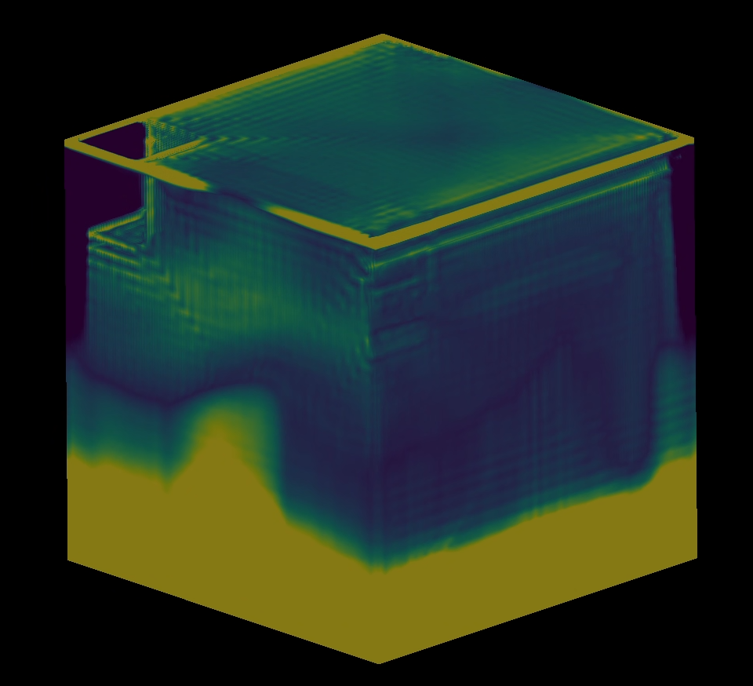
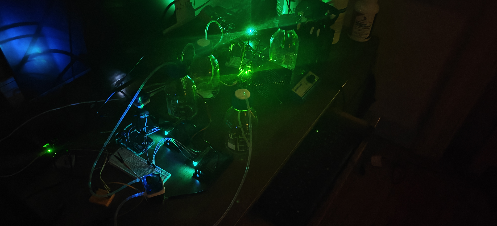

Overview
Acaysia is building the next generation of autonomous chemical reactor control. I work on GPU multiphysics simulation engines and MPPI (Model Predictive Path Integral) based control systems for continuous-flow chemical reactors, enabling real-time adaptive optimization of reaction yield, thermal efficiency, and energy utilization.
Technical Work
- Adaptive ML Control: Built adaptive ML control algorithms for continuous-flow chemical reactors that autonomously optimize reaction yield, thermal efficiency, and energy utilization.
- Digital-Twin Simulation: Developed a digital-twin simulation framework integrating thermodynamic models, sensor feedback, and reinforcement learning controllers for real-time process optimization.
- Hardware-in-the-Loop: Implemented HIL reactor control systems using Jetson Orin Nano and AtMega microcontrollers, achieving a 35% reduction in oscillatory instability under dynamic load conditions.
- GPU Multiphysics Engine: Core work on the GPU-accelerated simulation engine that powers the digital twin and control pipeline.
Technologies
Resources
Disclaimer: The whitepaper and technical materials provided above are abbreviated summaries intended for informational purposes only. They do not constitute a full disclosure of the underlying technology. Patent applications are pending. All rights reserved © 2026 Acaysia.